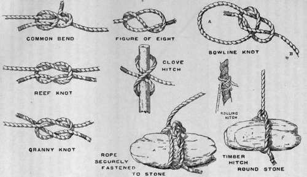
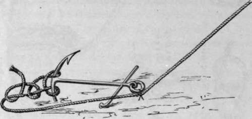
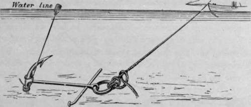
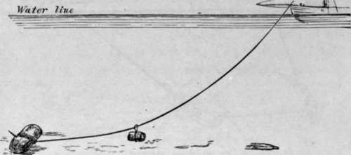

Sea Fishing From Small Boats. Part 2
Description
This section is from the book "Sea Fishing", by John Bickerdyke. Also available from Amazon: Sea Fishing.
Sea Fishing From Small Boats. Part 2
Boatmen's charges is a subject on which there is not a great deal to be said. At short-season watering-places, where the men have to make their harvest in a few weeks, a habit has arisen of charging what appear to be exorbitant rates. The sea angler, whose season is frequently not coincident with that of the ordinary visitors, may reasonably expect to be accommodated on more moderate terms. At half-a-crown an hour for boat and man, which is no uncommon charge, sea fishing may be much more expensive than angling in fresh water. This rate, which is about a pound a day or a little more, would cover all one's expenses at many an angling hotel in the Highlands, including rights of salmon and sea-trout fishing. In Scotland, by the way, it frequently happens that the landlord has a boat of his own on the sea loch for which he makes no charge, while the gillies who row one are well satisfied with 3s. 6d. a day and a reasonable (in the Scotch sense) allowance of whisky. By degrees, the boatmen at many places on our coast are beginning to learn that to treat their sea-fishing customers with greater liberality is good policy on their part. Wherever there is an agent or corresponding member of the British Sea Anglers' Society he is generally in a position to recommend men whose terms will not be found unreasonable. Of course, if a large heavy boat is hired which requires two men to work her, 4 l. or 5 l. a week is not out of the way.
A curious and unsatisfactory custom exists on some parts of the Welsh coast. When the day is over, and the angler has paid his ten shillings or a sovereign, and maybe broken his back hauling in the heavy mackerel leads over the stern, one of the boatmen places the fish in a box and walks off with them, saying, as he does so, that he will be pleased to 1 give' the gentleman half a dozen fish to take home for dinner. There is no class more liberal, as a whole, than the amateur fisherman, and few of us would grudge the fish ; but when the boatman claims the take as a matter of right it is an entirely different matter, and one's British back is put up at once.
A slight knowledge of the knots used by sailors is well worth having. Not one person in a hundred knows how to join two ropes together properly. This is done by what sailors call a bend, a very simple knot indeed, and easily understood by means of the illustration opposite. Next comes the reef knot, which is always used when tying a reef in a sail, and is easily undone. In attempting this a landsman nearly always ties what sailors would call a 'granny's knot.' The two can be compared in the diagram. A bowline knot is also very useful. A running bowline is simply made by placing the end of the rope b through the loop a. The clove hitch is a safe and very useful knot for fastening a rope to a round piece of timber : the harder the rope is pulled, the tighter it jams. The timber hitch is used for similar purposes. The rolling hitch is, in a sense, an improvement on the clove hitch, and is used for like purposes, more particularly for making fast tailblocks to the standing rigging. In the illustration is also shown the method of fastening a rope to a mooring stone. Any knot which is intended to be more or less permanent will be made all the more secure by the ends being whipped down to the main length of rope.
Sailors' Knots (Various).
Attachment Of Rope To Anchor On Rocky Ground.
When using an anchor over ground which is partially rocky, it is a good plan to ' scow' or ' trip' it. It will be seen from the illustration that the rope is made fast to the wrong end of the anchor, but is held to the ring by means of a piece of yarn strong enough to hold the boat and yet so weak that it will break if a very heavy strain is given to it, as would be the case should the anchor catch in a rock. On the twine breaking, the strain comes at the other end of the anchor, which is then easily-lifted.
Another plan, which is only suitable in slack water, is to have a light line from the flukes of the anchor, and, at the end of it, a small buoy, such as a tin can or a large lump of cork. Then, if the anchor sticks, by hauling on this line it is easily lifted. A strong tidal current, of course, sinks the little tin buoy.
When a stone or anchor is insufficiently heavy to hold the bottom, and the boat is slowly drifting away from her marks— a most annoying incident when fish are biting well —a piece of iron or stone ballast can be easily sent down the cable with advantage. How this is done is very clearly illustrated on the next page.
Buoying An Anchor.
It is a capital plan to have a few fathoms of galvanised iron chain next the anchor. It inclines the pull on the anchor to the perpendicular, and increases its holding powers. Often, by merely paying out a few fathoms of cable, the dragging of anchor or stone will be checked. Always be well supplied with cable.
Sending Messengers Down To The Anchor.
Fishing which are principally carried on from small boats. In the first place, fishing on the bottom with more or less heavy leads ; secondly, fishing at or about midwater with drift lines (lightly leaded lines which are carried out by the tidal current); and thirdly, whirring or trailing a bait on lightly leaded lines behind a boat which is rowed or sailed along. Finally, there will be a few remarks on hand lining.
Continue to:
- prev: Chapter VII. Sea Fishing From Small Boats
- Table of Contents
- next: Sea Fishing From Small Boats. Part 3
Tags
fishing, hooks, bait, fishermen, spanish mackerel, mackerel fishing